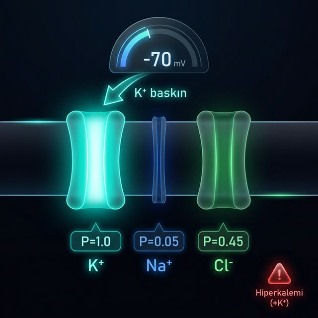

Nernst her iyonun "istediği" voltajı hesapladı. Ama gerçek zar aynı anda birden fazla iyona geçirgen — ve her iyonun etkisi eşit değil. GHK denklemi her iyona bir oy hakkı verir, ancak oyların ağırlığı geçirgenliğe (P) göre belirlenir.
Dinlenme halinde K⁺ geçirgenliği Na⁺'dan 20 kat fazladır. Zar Na⁺'un sesini neredeyse duymaz, K⁺'ın sesini çok net duyar. Na⁺ +62 mV istese de zar ona sadece %5 açıktır. Sonuç −70 mV olur — K⁺'ın istediğine yakındır.
| İyon | Geçirgenlik | Denge Pot. | Etkisi |
|---|---|---|---|
| K⁺ | 1.00 (baskın) | −88 mV | Vm'yi aşağı çeker |
| Na⁺ | 0.05 (zayıf) | +62 mV | Hafifçe yukarı iter |
| Cl⁻ | 0.45 (orta) | −65 mV | Neredeyse sessiz |
Kanda K⁺ fazlalaşırsa dışarıdaki K⁺ konsantrasyonu artar, bu da K⁺ denge potansiyelini daha az negatife kaydırır. Vm yükselir, hücre depolarize olur. Kalp ve sinir hücrelerinde bu durum tehlikeli elektriksel bozukluklara ve EKG değişikliklerine yol açar.
Nernst bir iyonun "istediği" voltajı verir. GHK ise tüm iyonların geçirgenliğe göre "ağırlıklı uzlaşma" voltajını ortaya koyar.
GHK bir meclis oylaması gibidir. Her iyon oy kullanır ama K⁺'ın 20 oyu, Na⁺'un ise sadece 1 oyu vardır. Sonuç kaçınılmaz olarak K⁺'ın istediğine yakın çıkar.
